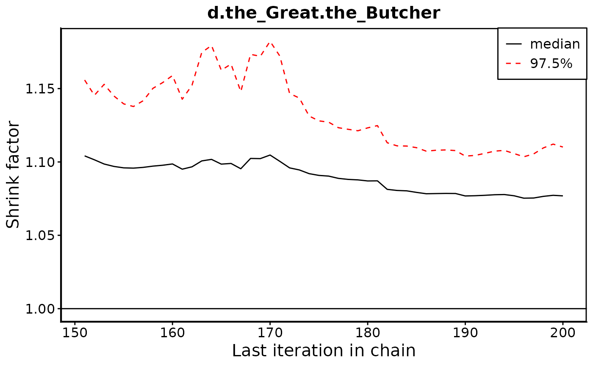
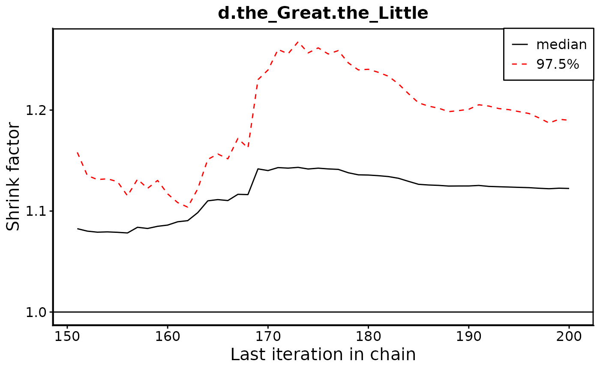
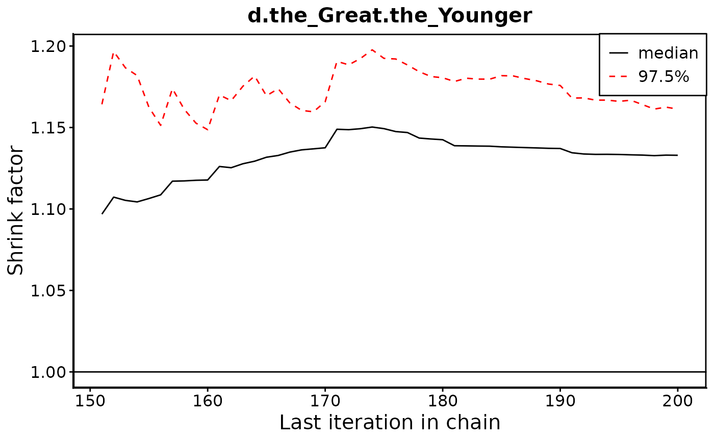
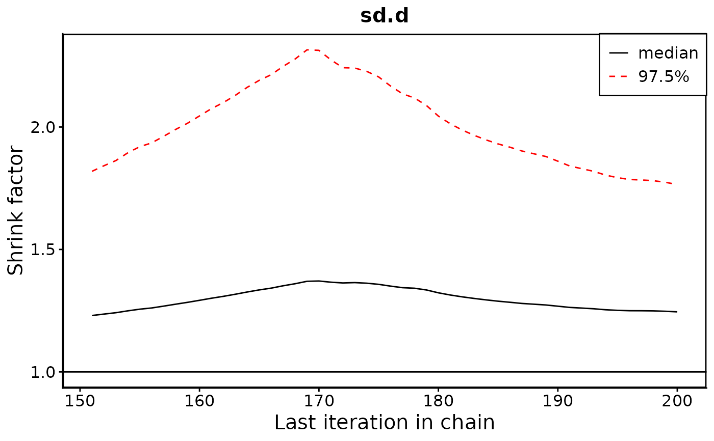

Creates Gelman plots for a gemtc or bnma model.
gelman_plots.RdCreates Gelman plots for a gemtc or bnma model.
Examples
configured_data_path <- system.file("extdata", "configured_data.Rds", package = "metainsight")
configured_data <- readRDS(configured_data_path)
# n_adapt and n_iter are set low to run quickly, but should be left as the
# default values in real use
fitted_bayes_model <- bayes_model(configured_data = configured_data,
n_adapt = 100,
n_iter = 100)
mcmc <- bayes_mcmc(model = fitted_bayes_model)
gelman_plots(mcmc$gelman_data, mcmc$parameters)
#> [[1]]

#>
#> [[2]]

#>
#> [[3]]

#>
#> [[4]]

#>